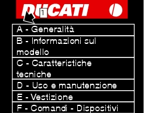
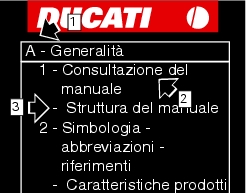

1 -
How to use this manual
How to use this manual
How to use this manual
This manual has been prepared for technical personnel at Ducati Authorised Service Centres with the aim to providing
fundamental information on how to work in accordance with the modern concepts of “best practice” and “safety in the workplace” during the maintenance, repair or replacement of chassis and engine original components of this motorcycle.
All operations described in this manual must be carried out by experienced, skilled technicians, who are required to follow the
Manufacturer's instructions in full.
Some information has been intentionally omitted, as we believe that all specialised technicians should have a basic technical
background. Additional information on how to install various components is provided in the spare part catalogue.
Important
This manual also describes the essential checks to be carried during the motorcycle pre-delivery phase.
Ducati Motor Holding S.p.A. declines all liability for any technical errors or omissions in this manual and reserves the right to make
changes made necessary by the technical evolution of its products without prior notice.
The information contained herein was updated at the time of going to press.
Important
Reproduction or disclosure of all or part of the contents of this manual is strictly forbidden. All rights on this manual are reserved
for Ducati Motor Holding S.p.A. Applications for authorisation for reproduction must be submitted in writing and must specify the reasons for such reproduction.
Ducati Motor Holding S.p.A.
Layout of the manual
This manual is divided into sections (1), each identified by a letter.

Each section (1) is made up of several chapters (2), which are numbered consecutively.
The chapters (2) may be further subdivided into paragraphs (3).

The manual describes all repair operations starting from the fully assembled motorcycle.
The full procedure is described up to the point in which the motorcycle is restored to its fully assembled starting condition.
Important
Some of the sections of this manual are not included, since the concerned motorcycle is not equipped with the relevant parts.
Important
The structure of the manual has been designed so that all the models types of the DUCATI MOTOR HOLDING products can be
included.
To facilitate consultation of the manual, the table of contents is identical for all motorcycle models.